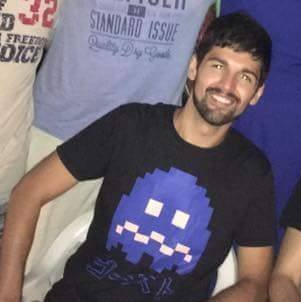

Sobre
Acabou a tristeza! Agora a galera da comunidade Python do Rio de Janeiro tem um encontro marcado, a cada último sábado de todo mês. Às vezes na Barra, às vezes no Centro, o que importa é se reunir para conversar, compartilhar e aprender.
Acompanhe-nos em nossas redes sociais para saber tudo sobre nossos encontros e as últimas novidades da comunidade Python.
Localização
Infnet: Rua São José, 90, 2º andar – Rio de Janeiro, Centro
Palestras
-

Padrões de Projetos em Python
Vinicius Pacheco
Como os padrões de projetos podem nos ajudar em uma aplicação real. Apresentação totalmente pratica utilizando os padrões: Strategy, Chain of Responsibility, Template Method, Decorator, State, Builder y Observer.
-

DSLs embarcadas em Python
Elias Tandel Barrionovo
Linguagens específicas de domínio, ou DSLs, são linguagens criadas para propósitos bem específicos: HTML para organizar conteudo, VimL para configurar (o melhor) editor de texto etc. Quando uma DSL é implementada como uma "extensão" da sintaxe de uma linguagem de propósito geral, chamamos ela de DSL Embarcada. Na palestra serão abordadas quais as vantagens de EDSLs e como criá-las em Python.
-

Data Science & Python
Bianca Rosa
Na era da informação, temos muitos dados. Mas eles de nada adiantam se apenas coletarmos e não tentarmos entender o que significam. Nessa palestra, pretendo dar uma introdução básica sobre Data Science e sobre como usar Python para extrair, limpar, analisar e visualizar dados usando exemplos práticos.
-

Ataque às fronteiras - isolando e testando suas integrações externas
Bernardo Fontes
Na web cada vez mais descentralizado, é comum termos muitas integrações com serviços externos no nosso código. Muitos desses serviços são críticos para a aplicação e a má implementação da comunicação com eles em nosso código pode virar uma enorme dor de cabeça. Quero apresentar como realizar integrações de uma maneira sustentável que facilite a manutenção dessas integrações e testabilidade.
-

Desenvolvendo aplicações Flask com TDD
Flávio Pontes
Pretendo demonstrar como desenvolver aplicações Flask com a metodologia Test-Driven Development - Desenvolvimento orientado a testes. Pretendo apresentar as ferramentas que utilizo, e como utilizo essa disciplina no meu dia-a-dia.
-

Como a Globosat utiliza Python para distribuição de conteúdo
Marcos Cardoso
Com um acervo de mais de 80.000 mídias, é necessário que todas as informações estejam em ordem. Além disso, o trabalho de aproximadamente 10 editores de conteúdo precisa ser atualizado com o menor atraso possível. Nesta palestra, contarei sobre as soluções para processamento paralelo utilizado na Globosat, passando também pela infraestrutura das API's dos aplicativos Telecine Play e Globosat Play.